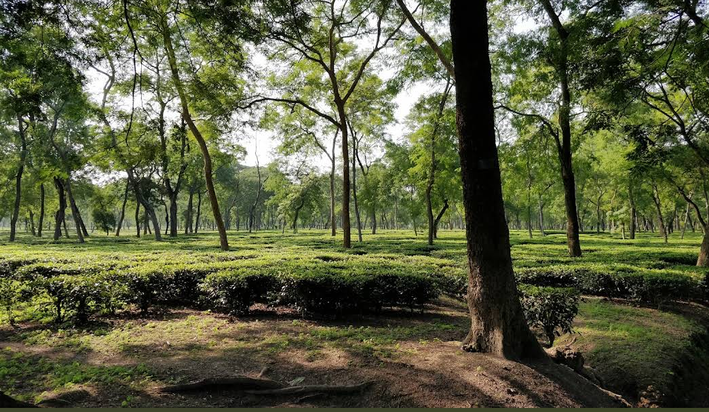
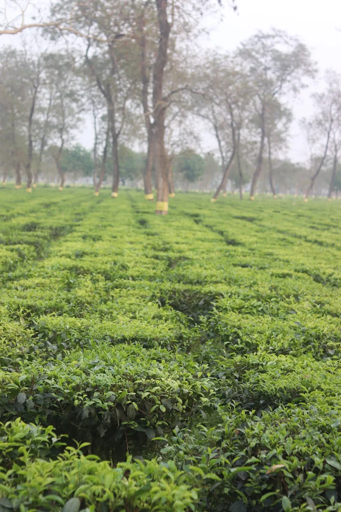
UDALGURI · ASSAM · INDIA
Find your place
in the green.কৌপাতি — অসমৰ সেউজীয়া সৌন্দৰ্য
Discover Koupati through its green landscapes, tea-garden surroundings, village life and the everyday stories of Udalguri, Assam.
A local guide to places, people and everyday life.
Udalguri & Darrang regionAssam, Northeast India
Green landscapesTea-garden and rural surroundings
Local storiesCulture, community and everyday life
Explore Koupati
Go deeper into the local story
Explore dedicated guides to the place, tea heritage, community life, culture and practical travel information.
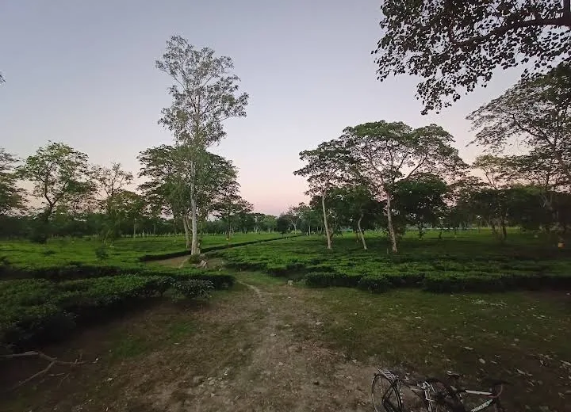
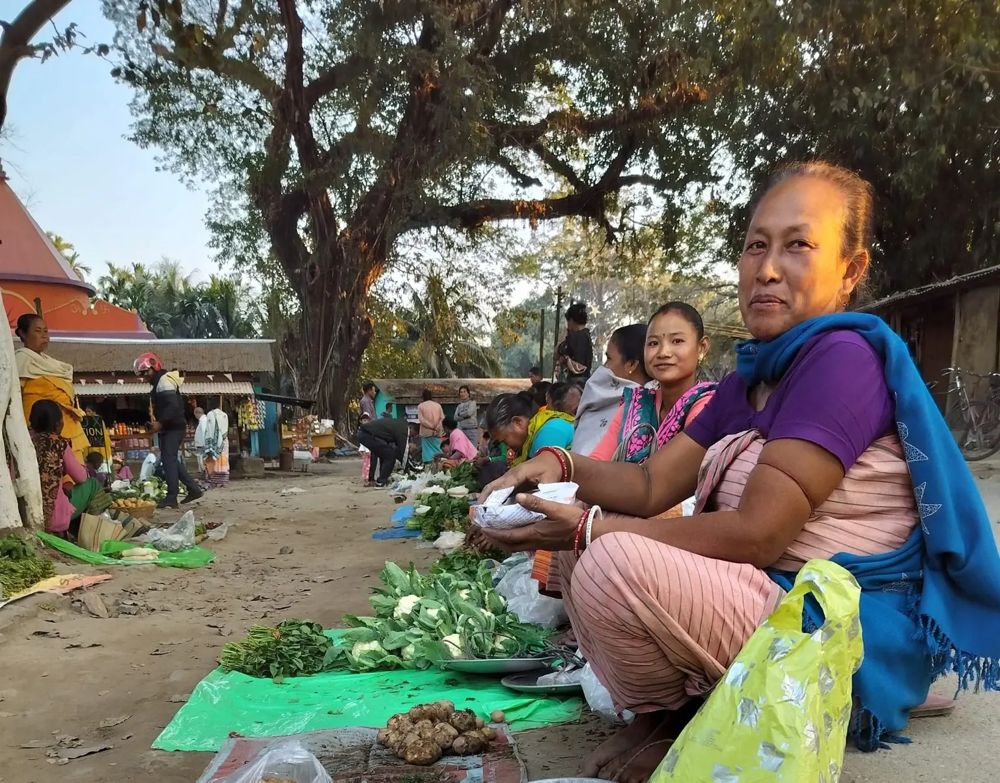
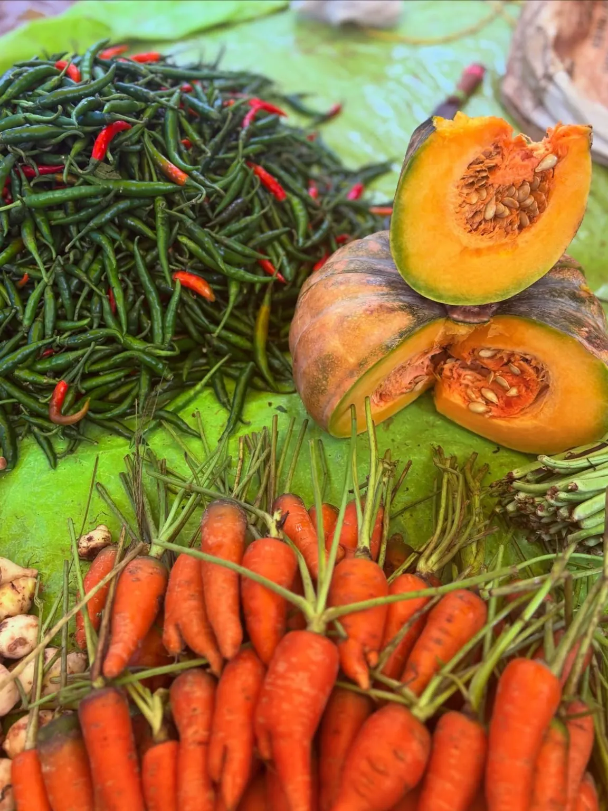
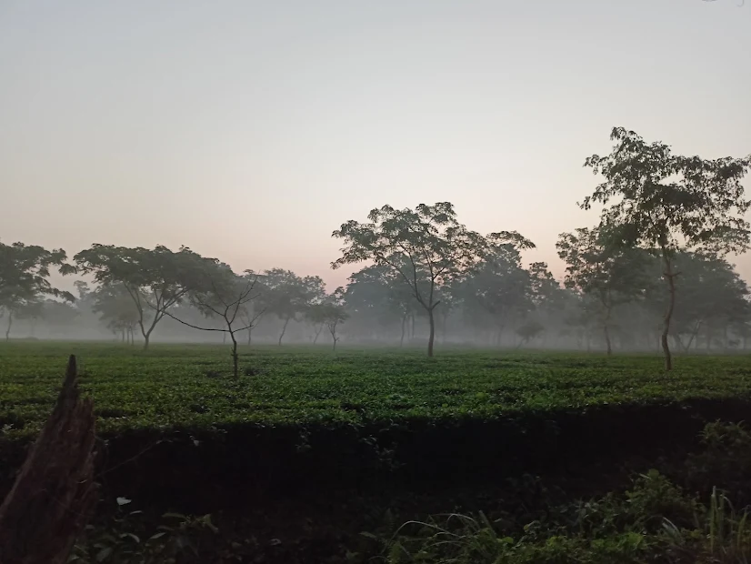
A slower pace. A greener view.
A little introduction
Welcome to Koupati
Koupati is associated with the Darrang–Udalguri border region of Assam. Koupati Tea Estate and Koupati Sunday Market are in Udalguri district. Its rural surroundings, greenery and connection with the region's tea-growing landscape give the area a character worth discovering.
This independent local guide brings together destination information, photographs and useful travel pointers to help visitors learn more about Koupati before they arrive.
Discover local life →Discover the surroundings
Small moments. Green horizons.
Explore the landscapes and local scenes that give this part of Assam its character.
Tea-garden scenery
Take in the green rows, open skies and distinctive landscapes associated with Assam's tea-growing region.
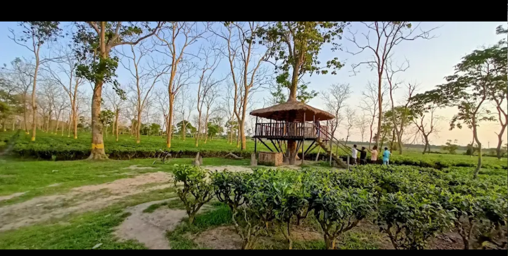
Rural landscapes
Notice the quiet corners, village surroundings and everyday outdoor spaces of the area.
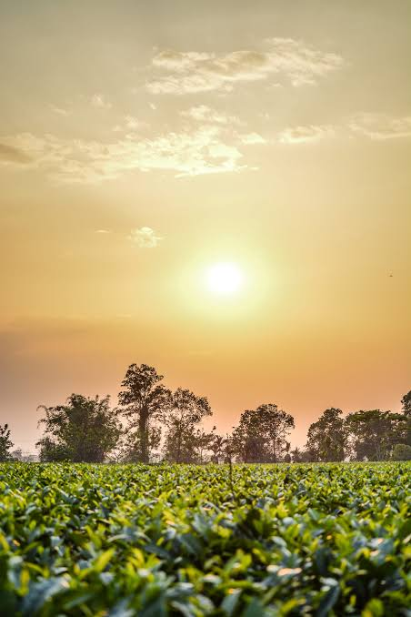
Golden-hour views
Soft morning and evening light can make the countryside especially rewarding to photograph.
A regional legacy
Rooted in Assam's tea country
Tea is part of the landscape, economy and identity of Assam.
Kopati Tea Estate & its surroundings
Kopati Tea Estate is in Udalguri district, in Assam's tea-growing region. The gardens and their surrounding communities are part of a landscape shaped by generations of tea cultivation and rural life.
Tea estates are working agricultural properties. Visitors should seek permission from estate management before entering private plantation areas, taking photographs of workers or accessing estate facilities.
This page is an independent local introduction, not an official estate or government publication. Estate history, ownership and visitor access should be confirmed with the relevant management.
Beyond the scenery
Experience the real Koupati
A destination is also its people, routines, flavours and shared traditions.

Community & village life
Discover the local institutions, neighbourhoods and everyday community life that shape the area.
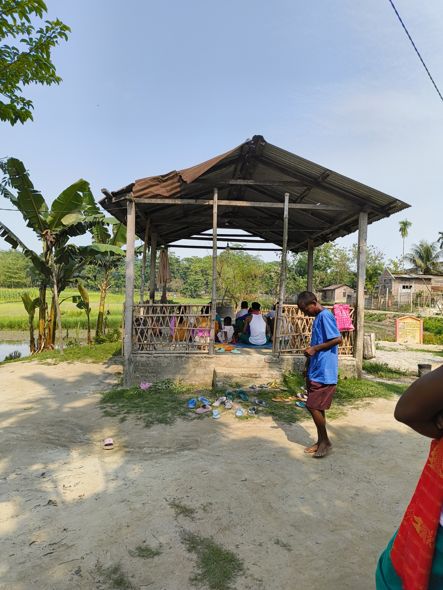
Local gathering places
Explore the public spaces and familiar meeting points that are part of rural life.
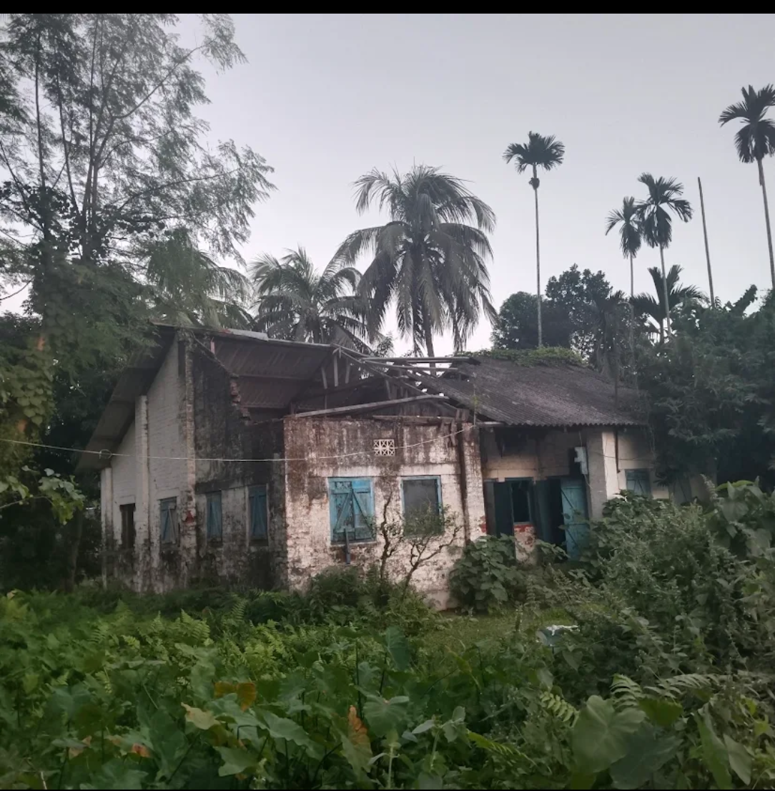
Village surroundings
Take time to appreciate the homes, trees and quieter scenes found around the locality.
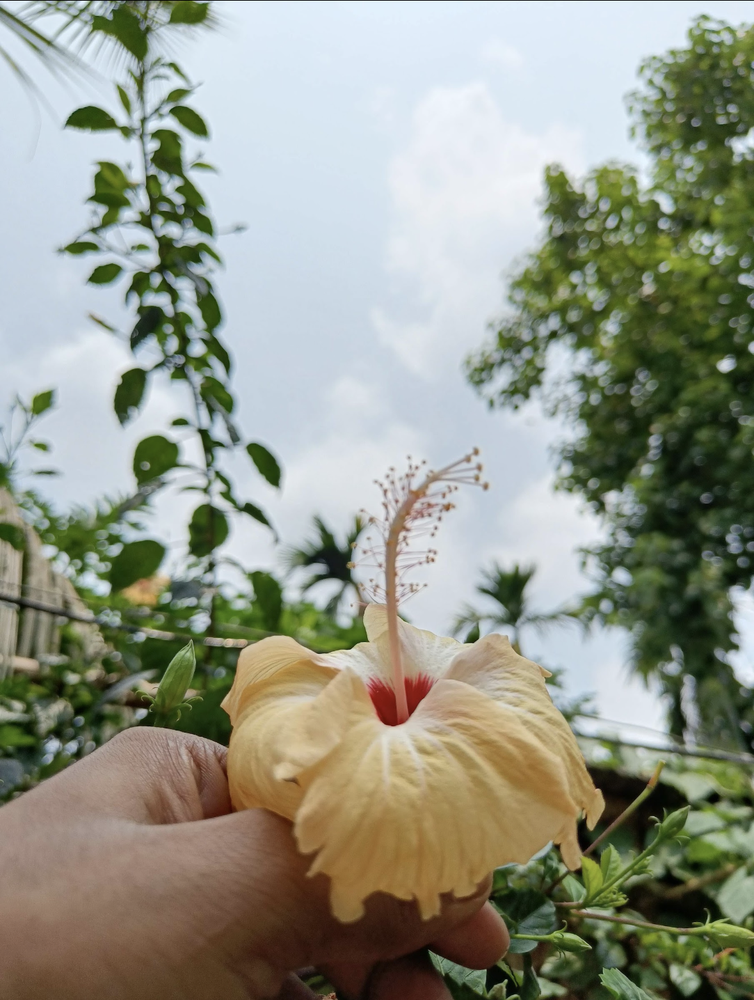
Everyday rural life
Small details — gardens, animals and daily routines — tell a story of the countryside.
Your voice matters
Share a story on Instagram ↗Help tell Koupati’s story
Are you a local resident, shopkeeper, photographer or visitor? Share a Sunday Market memory, a food recommendation, a cultural event, a photograph or a correction. Please send only information and images you have permission to share.
Before you set out
Plan your visit
A few practical reminders to make your journey smoother and more respectful.
Getting there
Use the map and directions link below to check the current route from your starting point. Road conditions and travel times can change.
When to explore
For outdoor photography, early morning and late afternoon often provide softer natural light. Check local weather before travelling.
Be a considerate visitor
Respect private property, ask before photographing people, avoid littering and follow instructions from estate staff and local authorities.
Please note: Distances, transport availability, public access, facilities and opening hours have not been independently verified here. Confirm details locally before making a special trip.
From our community
Real moments from Koupati
Village landscapes, Sunday Market, local harvests and the people who make Koupati special. Photographs shared by the local community.
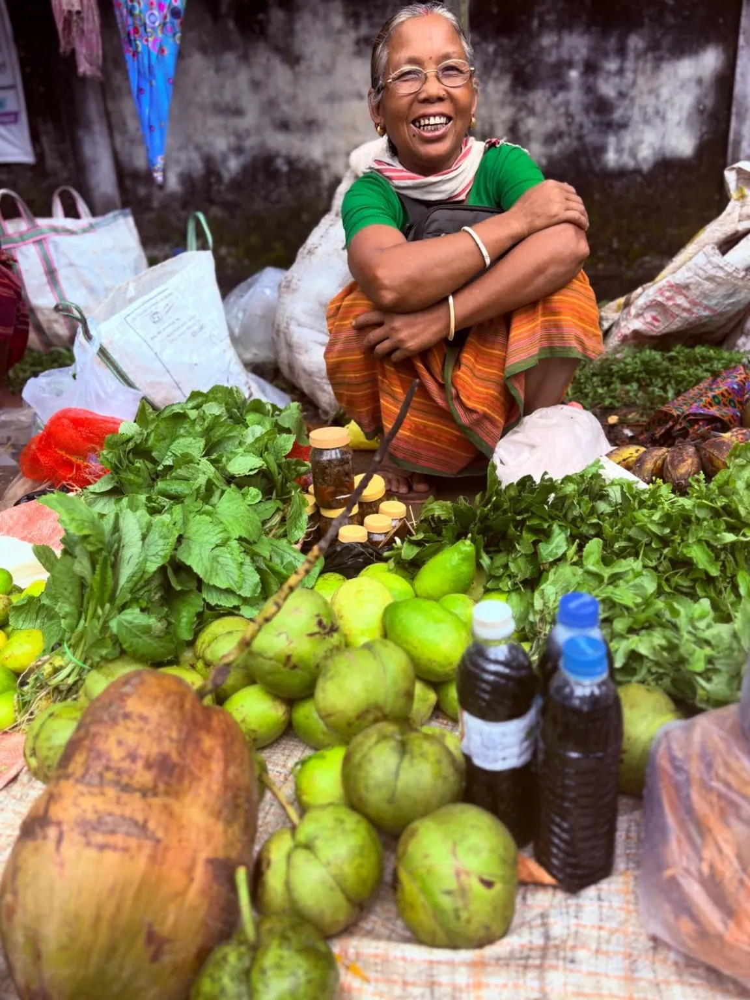
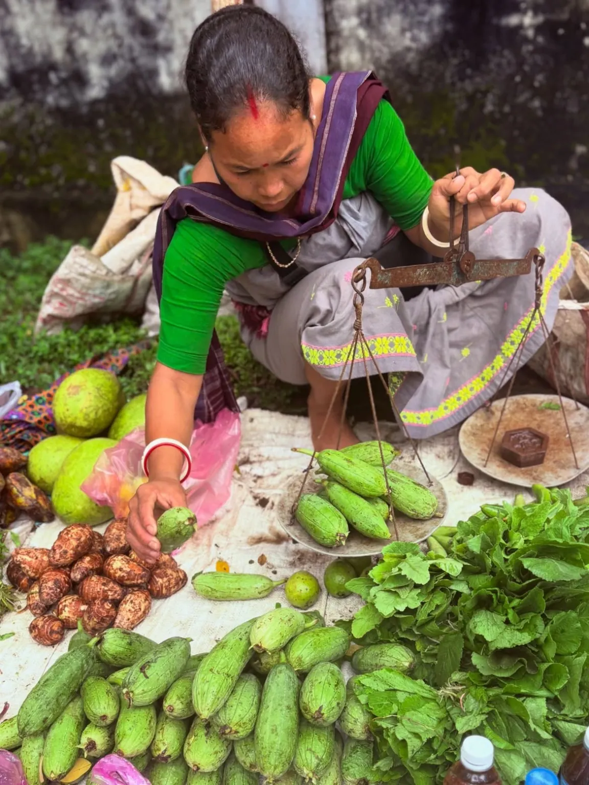
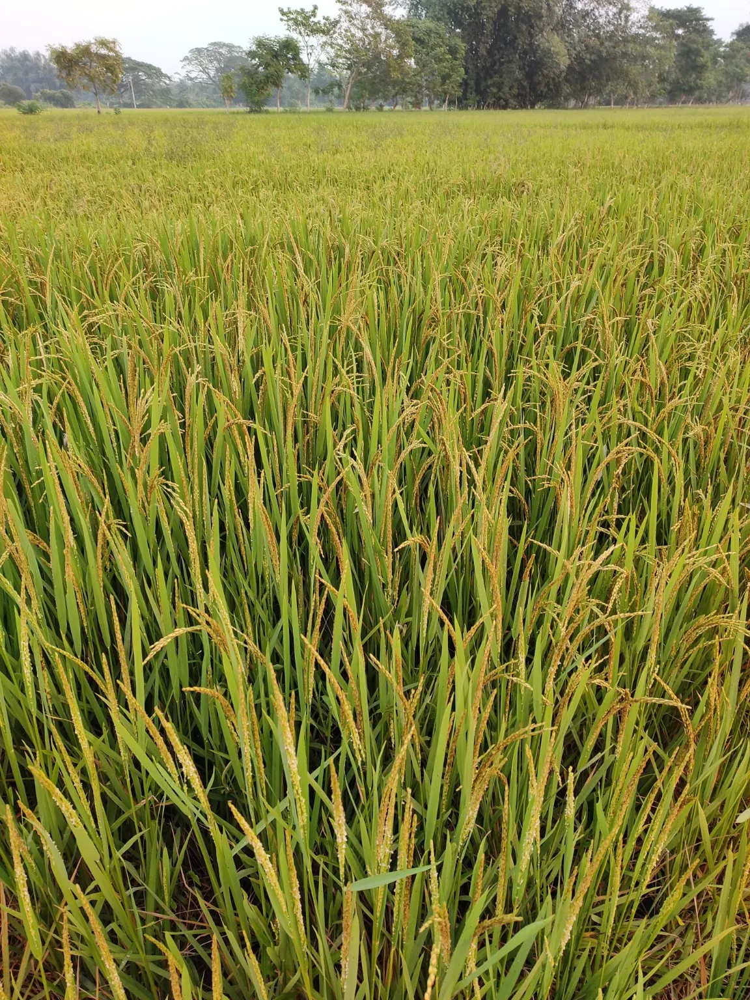
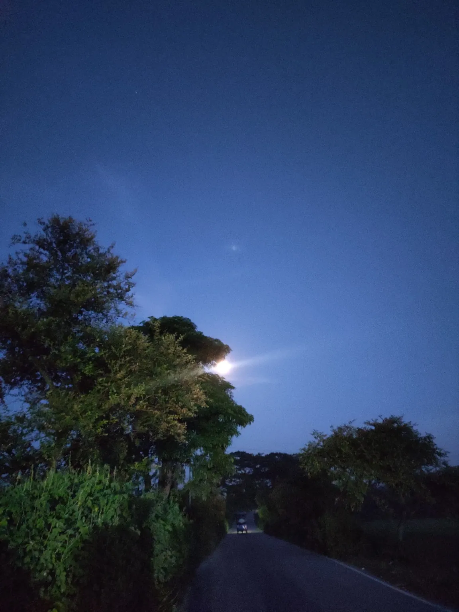
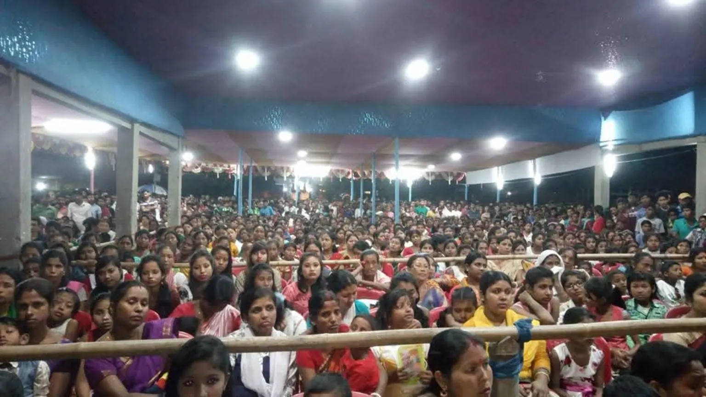
Original photographs from Koupati and its local Sunday Market.
PLAN YOUR VISIT
How to Reach Koupati
Road directions, railway options from Rowta Bagan to Guwahati, and practical local transport advice.
Explore transport guide ↗Learning in our community
Education in & Around Koupati
Discover 12 local schools and higher secondary institutions in Koupati and neighbouring villages.
Useful local information
Nearby villages, healthcare & police
Explore surrounding villages, hospitals, health centres and police stations serving the Koupati area.
Photographed in Koupati
Our village, our stories
Explore authentic photographs shared from Koupati, including the Sunday market, fresh local produce, fields and everyday village life.
All 15 photographs were shared and confirmed as being from Koupati and its local Sunday market. Please respect the people pictured when sharing images.
Find your way
Explore Koupati on the map
Use the map to orient yourself and open Google Maps for current directions. The pin is an approximate reference carried over from the previous website and should be checked before relying on it for navigation.
Map tiles © OpenStreetMap contributors. The pin is approximate; confirm your exact destination locally.
Useful information
Frequently asked questions
Quick answers for people learning about Koupati.
Where is Koupati?
Koupati Tea Estate and Koupati Sunday Market are in Udalguri district, Assam, India; the wider Koupati area is associated with both Udalguri and Darrang. Use the map and a current navigation service to confirm the route from your location.
Can visitors enter Kopati Tea Estate?
Do not assume the working tea estate is open to the public. Contact estate management and obtain permission before entering private property or taking photographs.
What is a good time for photography?
Early morning and late afternoon often offer softer light. Weather, season and local conditions will affect the best time on a particular day.
Is this an official government tourism website?
No. Koupati is an independent local information and destination guide. It is not presented as an official government or tea-estate website.
How can I suggest an update?
You can contact the website creator through the linked social profiles. Please share reliable sources for factual corrections and local information.
Every place has a story.
Help share the landscapes, local knowledge and everyday stories that make Koupati worth discovering.
Follow Koupati on Instagram ↗